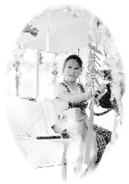

| Entre Maître et disciples |
(Initialement en Anglais) |
 Un beau jour d'automne, le centre de Floride a reçu un petit «visiteur» inattendu. C'était un beau gars, avec de bonnes manières et poli. Est-ce que j'ai dit qu'il avait quatre pattes ? Oui ! Nous voudrions vous présenter un nouveau résident du centre de Floride : Peter, le chiot ! (d'accord, d'accord, il est un peu âgé pour être un chiot.)
Peter, le nom que Maître lui a donné, est un chien perdu qui est rentré dans le centre après la fête de la Mi-Automne. C'est un grand chien de couleur brun clair avec un collier mais sans plaque portant de nom. Au début, nous ne faisions pas attention à lui, car les chiens perdus sont quelque chose d'habituel ici. Cependant, Peter nous a patiemment suivis toute la journée.
Ce soir-là, Maître est venue dîner avec nous, et Peter s'est approché et L'a salué de manière charmante en lui donnant sa patte ! Il l'a présentée au moins deux fois à Maître seulement, sans l'a donnée à quelqu'un d'autre, homme ou femme. Peut-être que son âme a reconnu l'auréole de Maître ou savait qu'Elle est un saint vivant. Elle a demandé à un résident d'apporter de la nourriture à Peter, qu'il a dévoré goulûment. Maître, se souciant qu'il n'y avait pas assez de nourriture pour lui, a pris une assiette et l'a rempli de Sa propre nourriture et lui a donné personnellement à manger. Le petit compagnon a mangé assiette après assiette. Maître contrôlait même la température de la nourriture avec ses doigts. Elle complimentait comme il était reconnaissant et poli, mangeant tout du steak parfumé (végétarien, bien sûr) aux légumes bouillis ! Il a même mangé la nourriture tombée sur le sol sale. Maître était très émue de son comportement gracieux.
J'étais présent à ce moment et n'étais pas si impressionné par les gestes de Peter que par le traitement compatissant de Maître. j'étais si touché que les larmes venaient presque à mes yeux. Voyant mon Maître bien aimé traiter un animal sans défense si gentiment m'a rendu honteux de pas pouvoir traiter les autres êtres humains avec la même dose d'amour et de tendresse. Maître nous a dit plus tard qu'Elle n'a fait que Son devoir d'hôtesse. Cependant, je savais que c'était une leçon pour moi comment aimer et m'occuper des autres. J'espère sincèrement qu'un jour, je pourrais comprendre et apprendre complètement la leçon sans prix que Maître m'a enseigné à travers Son propre exemple.